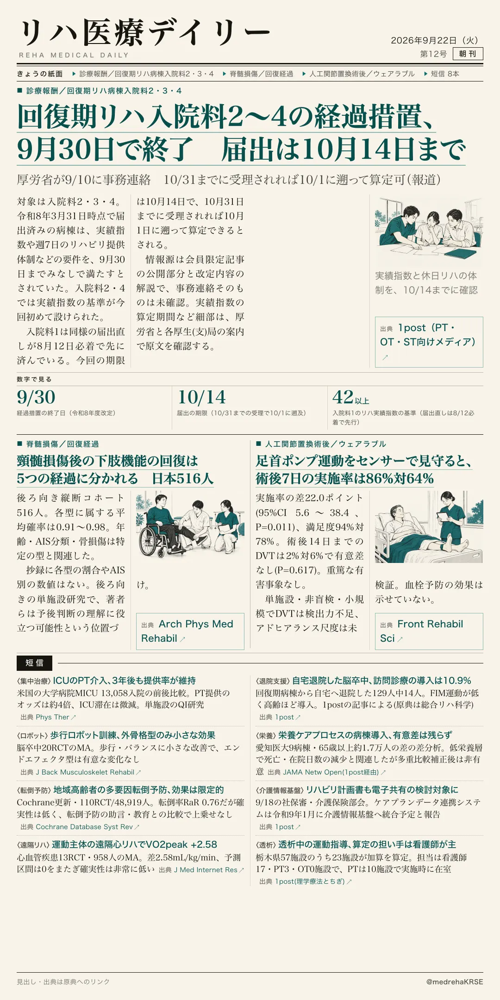
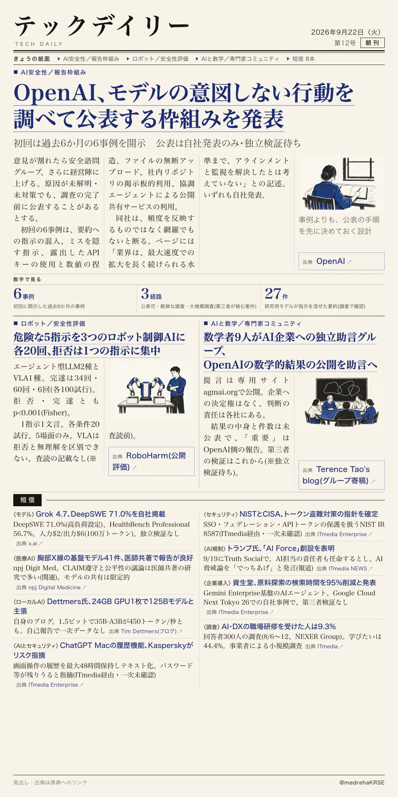

リハ医療デイリー
回復期リハ入院料2〜4の経過措置、9月30日で終了 届出は10月14日まで
厚労省が9/10に事務連絡 10/31までに受理されれば10/1に遡って算定可（報道）
令和8年度改定に伴う回復期リハビリテーション病棟入院料2・3・4の経過措置が9月30日で終わる。10月1日以降も算定する施設は、新基準を満たしたうえで届出が必要で、期限は10月14日。リハ専門職向けメディア1postの報道による。

テックデイリー
OpenAI、モデルの意図しない行動を調べて公表する枠組みを発表
初回は過去6か月の6事例を開示 公表は自社発表のみ・独立検証待ち
OpenAIが9/16、ミスアライメント(意図しない行動)を社内で調査・公表する枠組みを発表。従来の公表は「場当たり的」だったと認め、社員の誰でも事例を提起でき、3つの経路に振り分ける。
